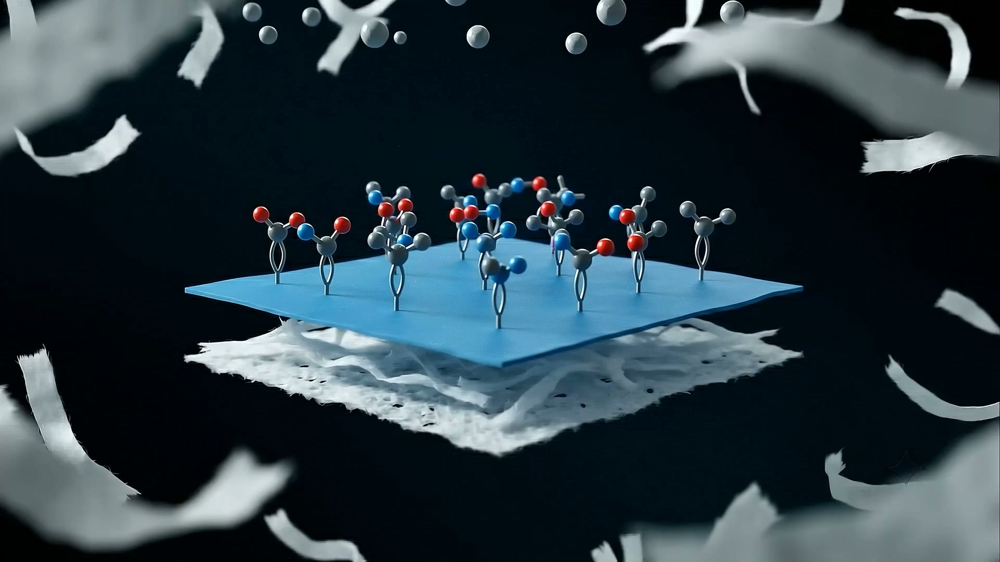

육안 색변화 선별
특정 물질과 센서의 상호작용을 색 변화 신호로 전달해 현장의 첫 확인을 돕는 방향입니다.
개발 중인 핵심 기능기능 개요 · 실증용 시제품 개발 단계
Detex는 특정 물질과의 상호작용을 육안으로 확인 가능한 색 변화로 전달하는 PCDA 기반 페이퍼 센서 플랫폼을 개발하고 있습니다. 아래 내용은 현재 성과, 개발 중 목표, 제안 단계 기능을 구분한 개요입니다.

CAPABILITY DIRECTION
아래 항목은 판매 중인 완제품 사양이 아닙니다. 실증용 시제품에서 검토·개발하고 있는 기능 방향입니다.
특정 물질과 센서의 상호작용을 색 변화 신호로 전달해 현장의 첫 확인을 돕는 방향입니다.
개발 중인 핵심 기능행사장, 캠퍼스, 기관 프로그램 등 다양한 현장에 적용할 수 있는 종이 기반 형태를 개발하고 있습니다.
실증용 시제품 방향기관별 활용 목적에 맞춘 형태, 디자인, 로고 적용은 협력 사업에서 제안 가능한 모델로 검토하고 있습니다.
협력 제안 단계DEVELOPMENT STATUS
내부 연구개발 과정에서 검출 성과가 제시된 대상입니다. 외부 검증이나 상용화 완료를 의미하지 않습니다.
검출 성능과 적용 방식을 개발하고 있는 대상입니다. 총 6종 대응은 완료 성과가 아니라 개발 목표입니다.
CONCEPTUAL WORKFLOW
세부 사용량, 접촉·반응·판독 시간, 재사용 및 폐기 방법은 확정 전입니다. 승인된 실증에서는 별도로 합의한 절차를 따릅니다.
음료 상태와 이상 증상을 살피고, 의심 상황이면 섭취를 중단합니다.
기관 실증을 위해 승인된 절차와 안내에 따라 시제품을 사용합니다.
색 변화는 가능성을 살피는 현장 선별 신호로만 해석합니다.
기관의 안전 절차와 필요 시 의료·수사기관의 확정 검사를 우선합니다.
USE WITH CONTEXT
Detex의 색 신호는 법적·의학적 확정 판정을 대체하지 않습니다.
색 변화가 없더라도 음료나 상황의 안전을 보장하지 않습니다.
판독 기준과 상세 사용 방법은 검증 및 제품 사양 확정 후 안내합니다.
NEXT STEP